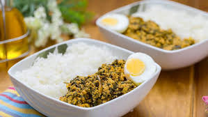

Kontomire stew

Delicious! Kontomire stew with rice
there is only one way to make Kontomire stew and its the Ghana way for best taste and joy.
Ingrediants
- 15 kontimire leaves
- 4-6 small tomomatos
- 1/4 Cup turkey berries
- pepper
- 3 med onions
- 2 med smoked salmon
- 1 cup mellon seeds
- 1/2 cup palm oil
- momoni (optional)
- 2 tsp grounde shrimp
- Salt as required
- Soak melon seed in water, set aside. Wash kontimire leaves with a generouse amount of salt to prevent itching of hand when cutting. Cut kontimire into desired stripes. Put the cut kontimire into a saucepan with a little water in place on high heat. Cover and bring to a boil. turn the kontimire after about five minutes of cooking to mkae sure eveything is cooked through. Turn off fire and set aside .
- Blend two onions, tomatos, peper and turkey berries together, set aside. Remove the flesh of the salmon, break into two and remove the bones, break into desired sizes, set aside. Wash the soaked melon seeds and put into a blendeer. Add about 1/4 tsp of salt and just enought water to blend into a paste. set aside slice remaining onion.
- Pour palm oil into a medium saucepan , add half of the sliced onions and momoni if using. Fry till onions softened. Add the blended tomatos, onions, turkey berries and the pepper. Bring to simmer on medium heat. Add salmon, salt and grounded shrimp if using. Coverand let it simmer for 7 to 10 minuetes till sauce is bare thickend.
- Add in the blended melon seeds, "do not stir" cover and reduce heat to low. Let it simmer 8 to 10 minutes or till the blende melon seeds sets. Gently stir in the steamed kontimire. Add the remaining sliced onions , let it simmer for about 5 minutes till onions are softend . serve it with yam, rice, cocoyam, casava, plantains or sweet potatos.